Префектура Нара · город Нара · маршрут
Нара во второй раз: два дня по любимым местам хозяйки кафе «Куруми-но ки»
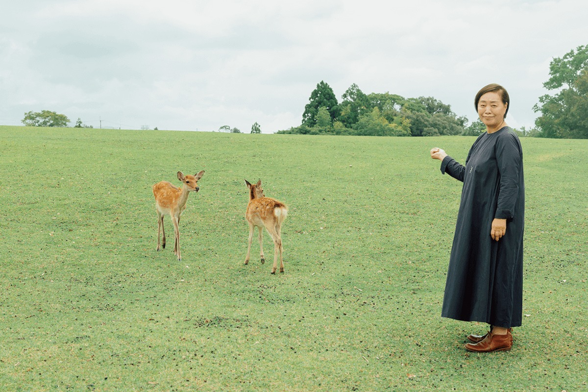
В Нару почти все японцы впервые попадают со школьной экскурсией: Тодайдзи, Хорюдзи, Кофукудзи, олени в парке. Во второй раз стоит приехать уже взрослым и посмотреть на город глазами человека, который ищет его сокровища больше двадцати лет.
Хозяйка
Юкико Исимура и «Куруми-но ки»
Юкико Исимура родилась в Такамацу, на острове Сикоку, а в 1984 году открыла в Наре кафе и магазин «Куруми-но ки», «Ореховое дерево». Сегодня его знают все, кто любит кафе и ремесленные вещи: здесь вкусно кормят, а на полках стоят местные продукты, посуда, одежда и вещи для дома, которые хозяйка выбирает сама. Говорят даже так: увидел вещь в «Куруми-но ки», покупай сразу, в Токио такой не найдёшь.
Первые годы, признаётся она, было не до Нары: всё уходило на кафе. Поиски «сокровищ Нары» начались около 2000 года, когда она открыла комплекс «Акисино-но мори» с гостиницей, рестораном и галереей (позже он закрылся). Гостям из других префектур хотелось показать лучшее, и она начала с поисков чая, который можно им подать, потом стала ходить по храмам и мастерским ремесленников.
«Каждый раз, когда я находила то, что можно назвать сокровищем, я думала: какое же хорошее место эта Нара. И любила её всё сильнее»
Юкико Исимура
В 2015 году она придумала для квартала Нарамати комплекс «Сика-но фунэ», «Олений корабль»: туристический центр, столовую с продуктовой лавкой и чайную. О нём ниже, в маршруте второго дня. Свою работу она описывает так: создавать уютные места, которые идут рядом с повседневной жизнью.
Сувенир
Печенье с оленями в жестяной коробке
Когда Юкико Исимура выходила замуж, из всей мебели для нового дома она купила только комод фабрики «Мацумото мингэй кагу», которая делает мебель в духе движения мингэй, народного ремесла. Спустя годы эта линия неожиданно продолжилась: на собственной коробке печенья «Куруми-но ки» нарисован олень художника Самиро Юноки.
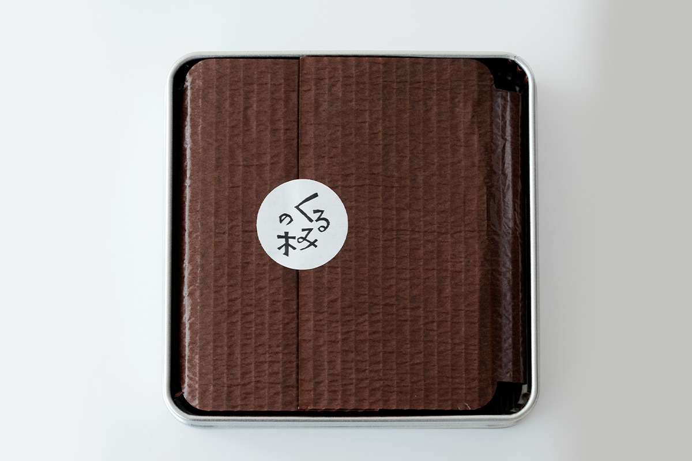
Если снять шутливую обёртку с оленем и открыть коробку, на каждом печенье тоже окажется оттиснутый олень. Печенье хрустящее, с хорошим сливочным ароматом и умеренной сладостью, во рту тает ритмично, хруст за хрустом. Набор из солёного и орехово-какаового порадует кого угодно, так что это хороший подарок из Нары.
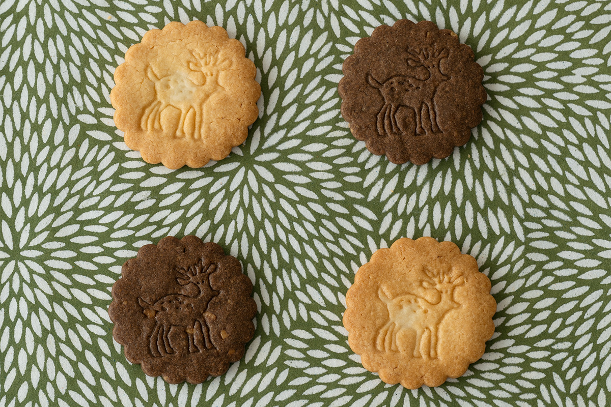
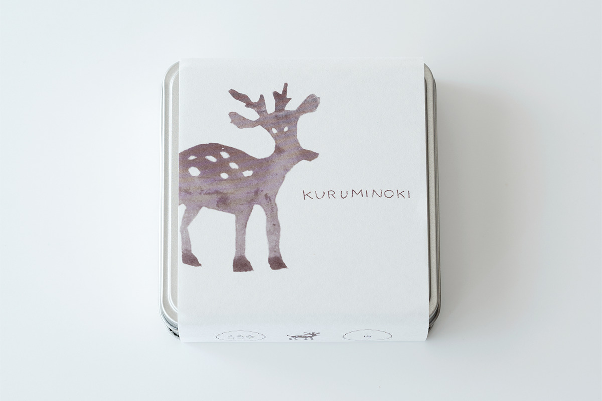
«Куруми-но ки»
- Адрес
- префектура Нара, город Нара, Хорэн-тё, 567-1
- Телефон
- +81 742-23-8286
- Часы работы
- 11:00–17:00
- Выходные
- среда, третий вторник месяца
- Сайт
- kuruminoki.co.jp
Утро
Олени на лугу Тобихино
Луг Тобихино в парке Нара Юкико Исимура обходит ранним утром, перед работой. Около 1300 оленей пасутся здесь на траве, а вокруг стоят памятники всемирного наследия: Тодайдзи, Кофукудзи, святилище Касуга-тайся, сокровищница Сёсоин.
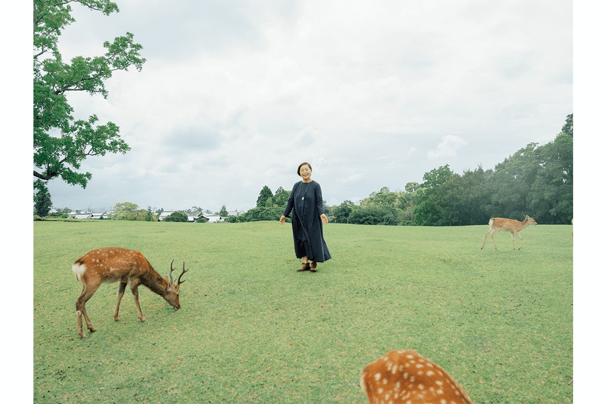
«Я иду по траве, глажу оленей по голове, смотрю на гору Вакакуса. Это время придаёт мне сил. Здесь создаётся моё завтра»
Юкико Исимура
В 2020 году, когда из-за коронавируса город опустел, этот вид её поддержал. «Людей нет, а олени есть. Что бы ни случилось, им всё нипочём. Так было с древности, и, глядя на их спокойную силу, я поверила, что, если не терять надежды, всё будет хорошо».
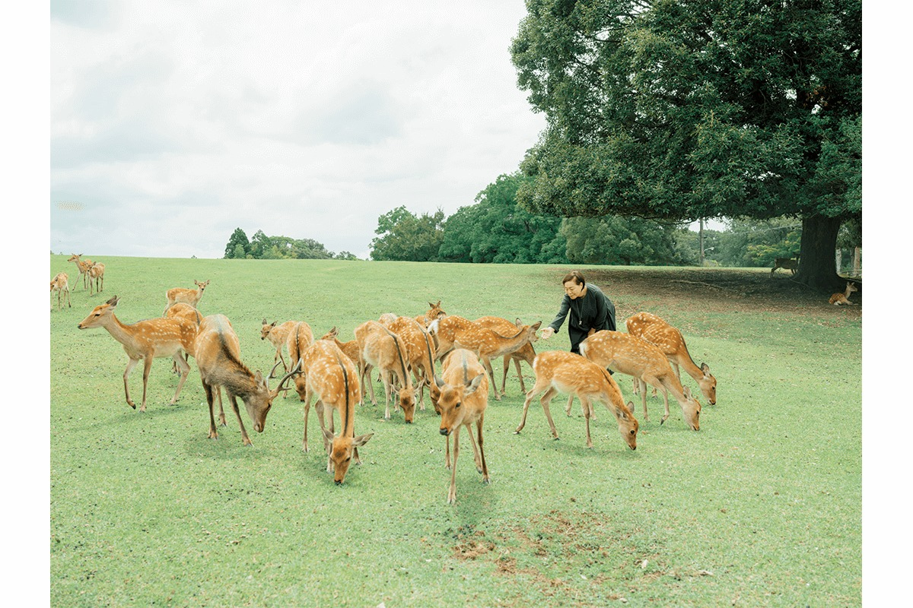
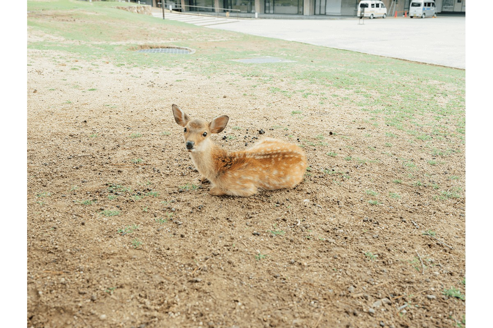
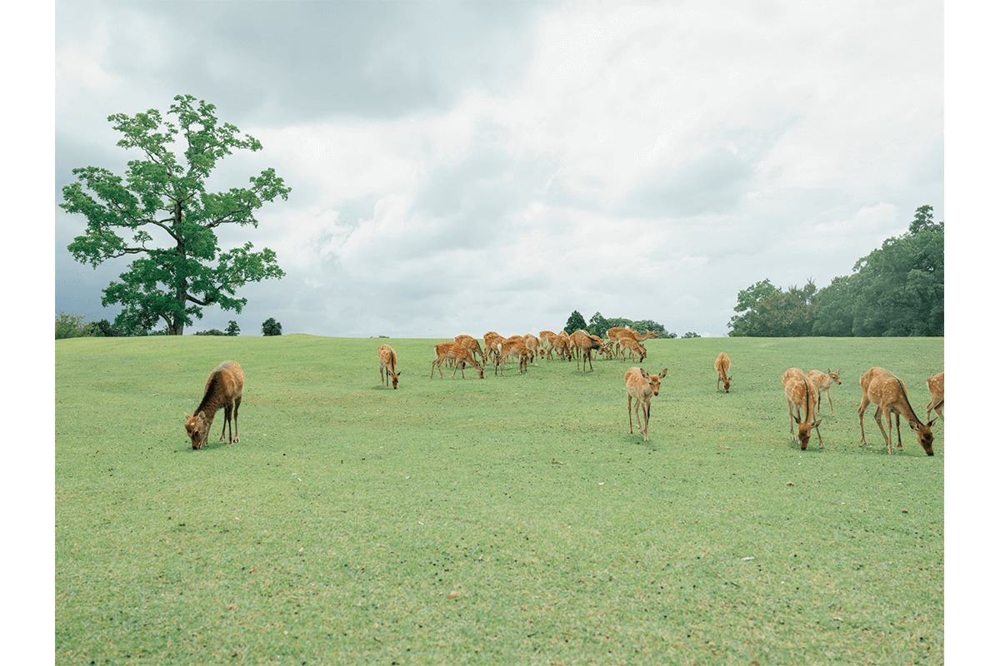
Парк Нара
- Адрес
- префектура Нара, город Нара, Касугано-тё и окрестности
- Сайт
- nara-park.com
День первый
Каша, святилище и сладости
Обед в чайной «Касуга Нинай-дзяя»
С вокзала Кинтэцу-Нара маршрут ведёт в чайную «Касуга Нинай-дзяя» на территории святилища Касуга-тайся. Её знаменитое блюдо «манъё-гаю», рисовая каша, которую доводят белым мисо из префектуры Нара. Добавки меняются каждый месяц: в октябре это каштан и батат.
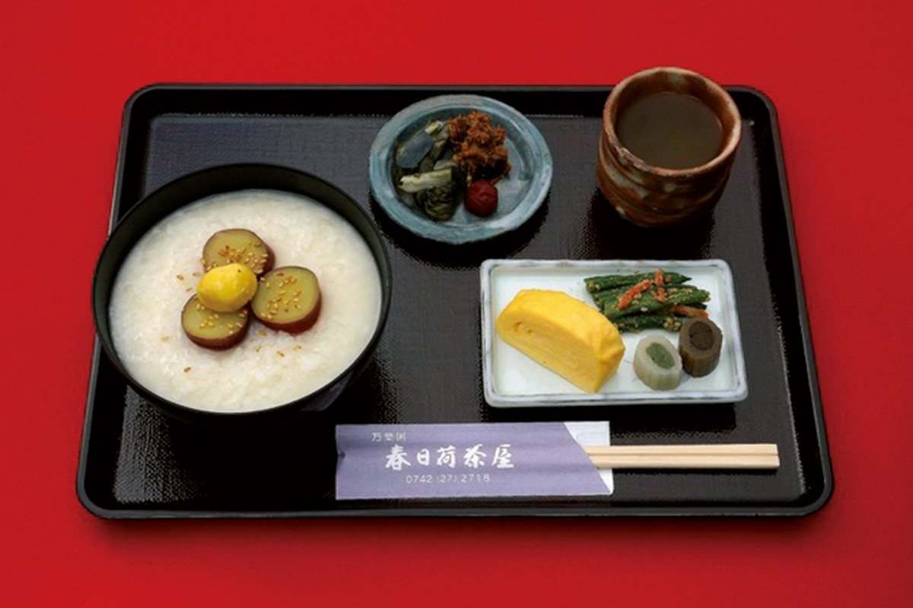
«Касуга Нинай-дзяя»
- Адрес
- префектура Нара, город Нара, Касугано-тё, 160
- Телефон
- +81 742-27-2718
- Часы работы
- 10:00–16:00
- Выходные
- нерегулярно (смотрите сайт)
Святилище Касуга-тайся
Святилище Касуга-тайся основали в начале периода Нара, в VIII веке, чтобы оно охраняло столицу Хэйдзё-кё. Его главный храмовый зал признан национальным сокровищем, а рядом разбит ботанический сад «Манъё», где растут травы и цветы из старинной поэтической антологии «Манъёсю».
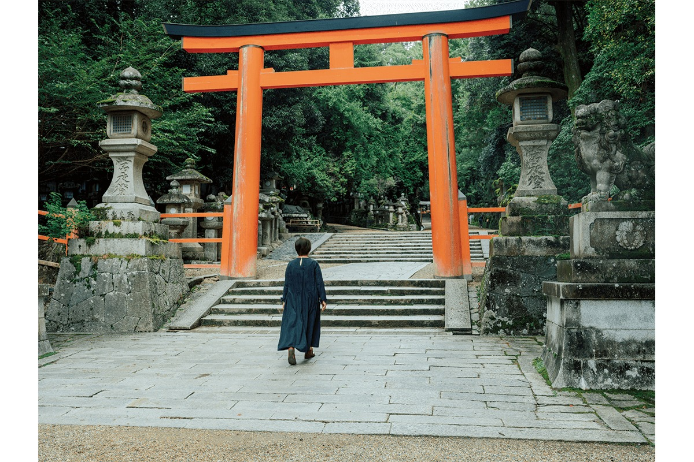
Оленей здесь с древности почитают как посланников богов. Глядя, как олень неспешно проходит перед алыми тории, Юкико Исимура улыбается: «Он такой счастливый». Такие виды с оленями она тоже считает своими сокровищами.
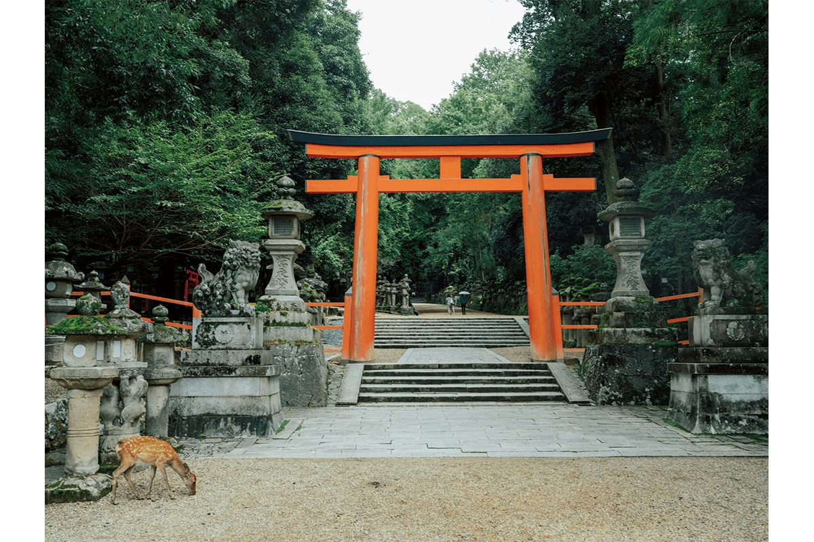
Святилище Касуга-тайся
- Адрес
- префектура Нара, город Нара, Касугано-тё, 160
- Телефон
- +81 742-22-7788
- Часы работы
- 7:00–17:00 (главный зал)
Сладости Kasiya
Гостей Юкико Исимура водит только туда, где за прилавком стоит сам хозяин. Одно из таких мест кондитерская Kasiya, где японские сладости вагаси подают курсом, и хозяин готовит их прямо на глазах у гостя и рассказывает о них. Курс нужно бронировать.
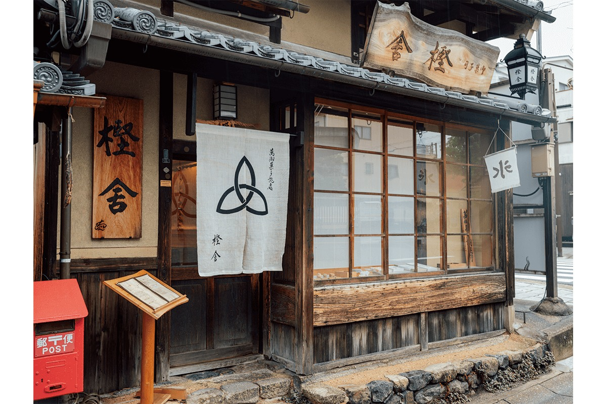
«В его сладости вплетено честное отношение к продуктам. Это счастье во рту»
Юкико Исимура
По её словам, хозяин считает, что красивее и вкуснее всего то, что выращено небом и землёй, относится к продуктам с уважением и через свои сладости рассказывает о Наре.
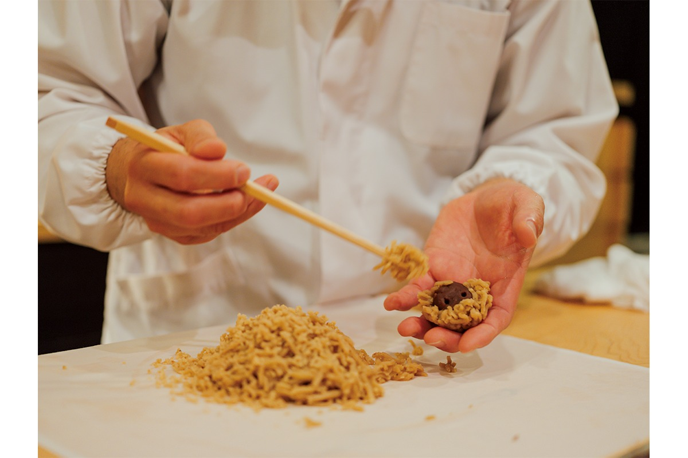
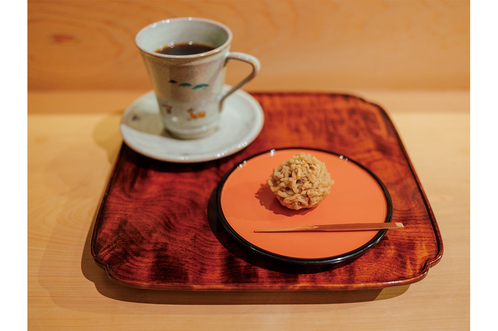
Kasiya
- Адрес
- префектура Нара, город Нара, Тюин-тё, 22-3
- Телефон
- +81 742-22-8899
- Часы работы
- 9:00–18:00
- Выходные
- среда
- Сайт
- kasiya.jp
Национальный музей Нары
В павильон буддийской скульптуры «Нара Буцудзокан» при Национальном музее Нары Юкико Исимура давно хотела попасть. Здесь постоянно выставлено около ста статуй, а само здание эпохи Мэйдзи, в западном стиле, тоже стоит внимания. Осенью 2020 года, с 24 октября по 9 ноября, в музее прошла ежегодная выставка сокровищ Сёсоин.
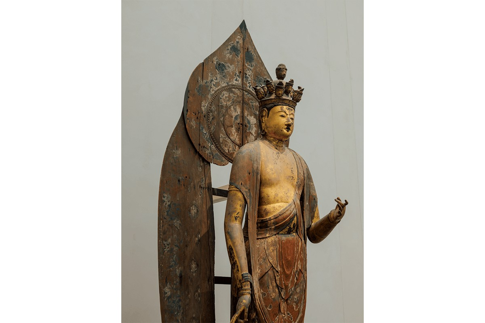
«Как только я вошла, мне показалось, что меня мягко обняли. То, как жить человеку, перекликается с тем, ради чего создавались эти статуи. Они без слов говорят, что настоящее остаётся всегда»
Юкико Исимура
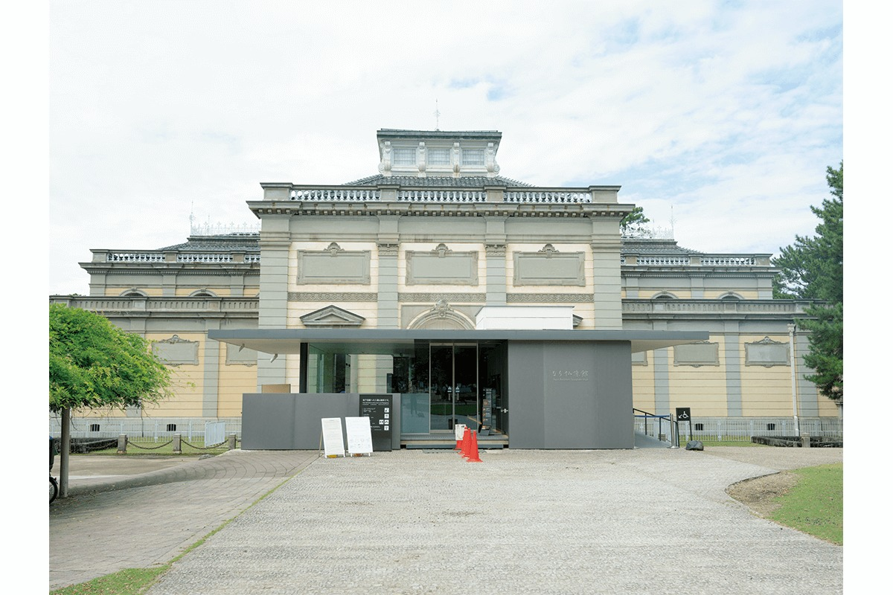
Национальный музей Нары
- Адрес
- префектура Нара, город Нара, Нобориодзи-тё, 50
- Телефон
- +81 50-5542-8600
- Часы работы
- 9:30–17:00 (вход до 16:30)
- Выходные
- понедельник
- Сайт
- narahaku.go.jp
Ночь в Naramachiyado Kidera no ie
На ночь Юкико Исимура отправляет гостей в Naramachiyado Kidera no ie: пусть поживут в Наре, как в собственном доме. Это старый городской дом машия возрастом около ста лет, который однажды едва не снесли. Его владелец вырос на этом месте и восстановил дом, признанный культурным достоянием Нары. Дом сдают целиком.
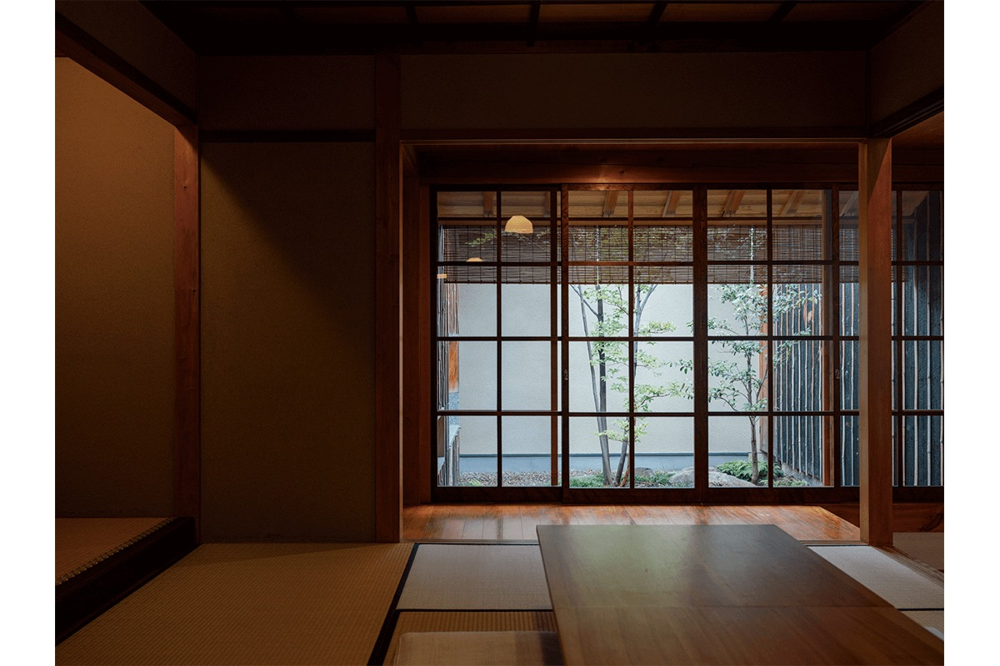
«Здесь не навязчивы, но заботу чувствуешь всегда. Завтрак, чашка чая, и от каждой мелочи на душе становится тепло»
Юкико Исимура
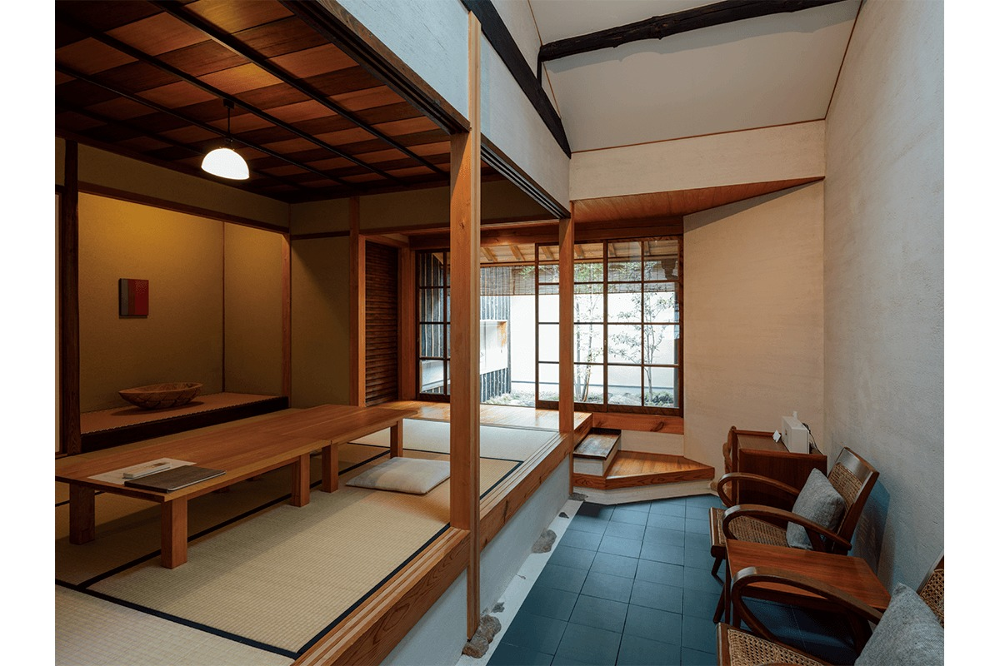
Naramachiyado Kidera no ie
- Адрес
- префектура Нара, город Нара, Кидэра-тё, 779
- Телефон
- +81 742-25-5500
- Цены / Вход
- от 21 000 иен без налога за ночь с завтраком при проживании 2–3 гостей в доме
- Сайт
- machiyado.com
Ужин в Tsukumo
Вечером маршрут ведёт в ресторан японской кухни Tsukumo. Его хозяин учился в Киото и Лондоне, а сам приехал в Нару из другой префектуры, но, по словам Юкико Исимуры, изучил её историю и вкладывает в блюда любовь к этому городу. Ужин здесь в 2020 году состоял из девяти блюд кайсэки и стоил 13 200 иен.
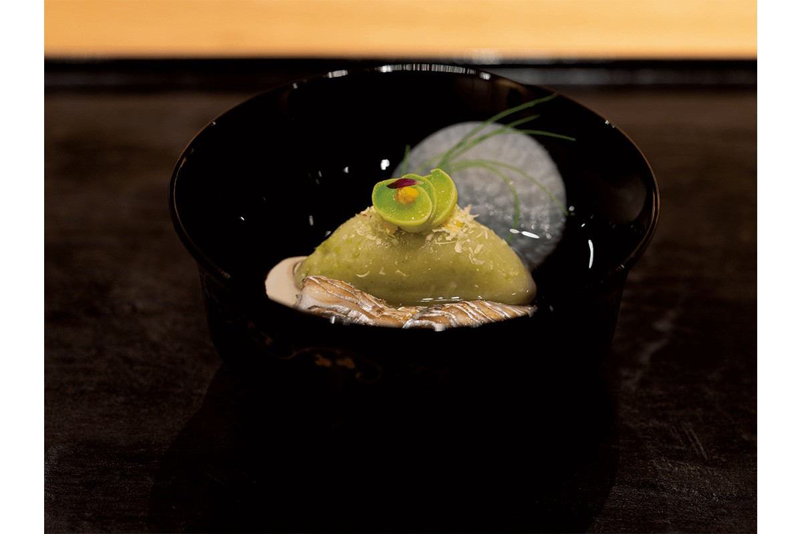
Одно из блюд посвящено стихотворению Абэ-но Накамаро о луне. Юкико Исимура говорит, что каждый визит приносит что-то новое.
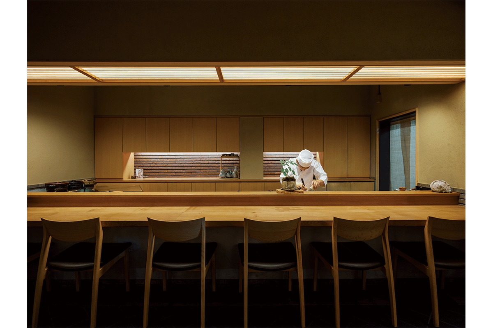
Tsukumo
- Адрес
- префектура Нара, город Нара, Кидэра-тё, 968
- Телефон
- +81 742-22-9707
- Сайт
- tsukumonara.com
День второй
Завтрак в машия и «Олений корабль»
Второй день начинается с завтрака в Naramachiyado Kidera no ie: домашний неочищенный рис, суп мисо, сваренный в глиняном горшке, и другие простые блюда. Потом можно снова пройти в парк Нара к оленям.
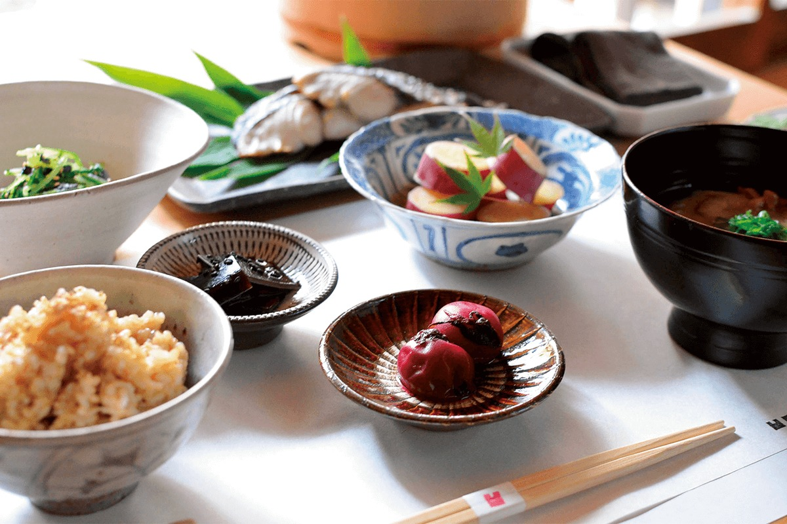
«Сика-но фунэ»
К обеду дорога ведёт в «Сика-но фунэ». Комплекс состоит из трёх зданий: туристического центра, столовой с продуктовой лавкой «Камадо» и ресторана с чайной «Саэдзури». Здесь работает школа чайной церемонии, проходят лекции и выставки. Еду готовят из сезонных продуктов префектуры, а в лавке продают еду и ремесленные вещи местных мастеров. Так комплекс рассказывает о жизни, которая передаётся в Наре из поколения в поколение.
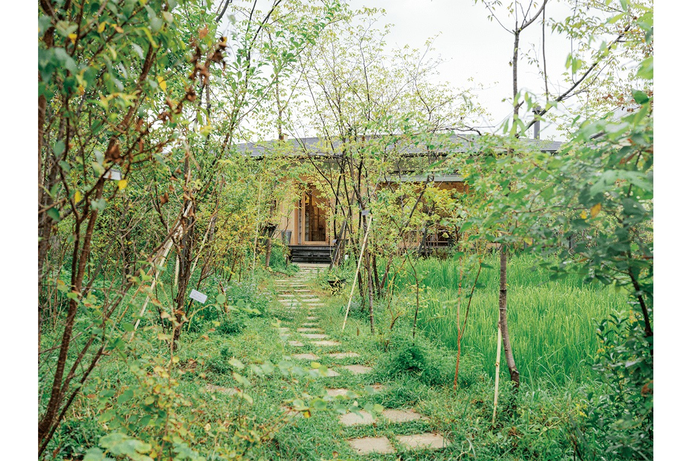
В «Саэдзури» подают обед из сезонных блюд, меню меняется каждый месяц.
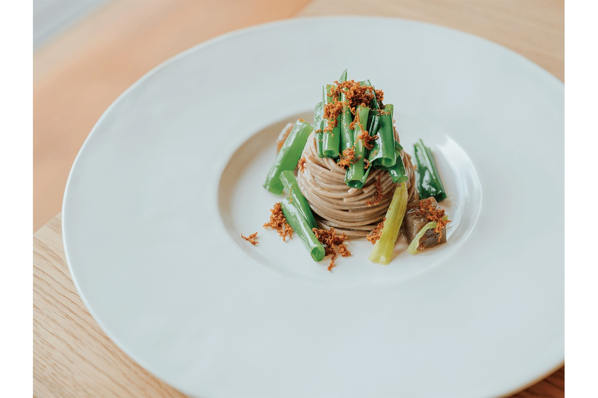
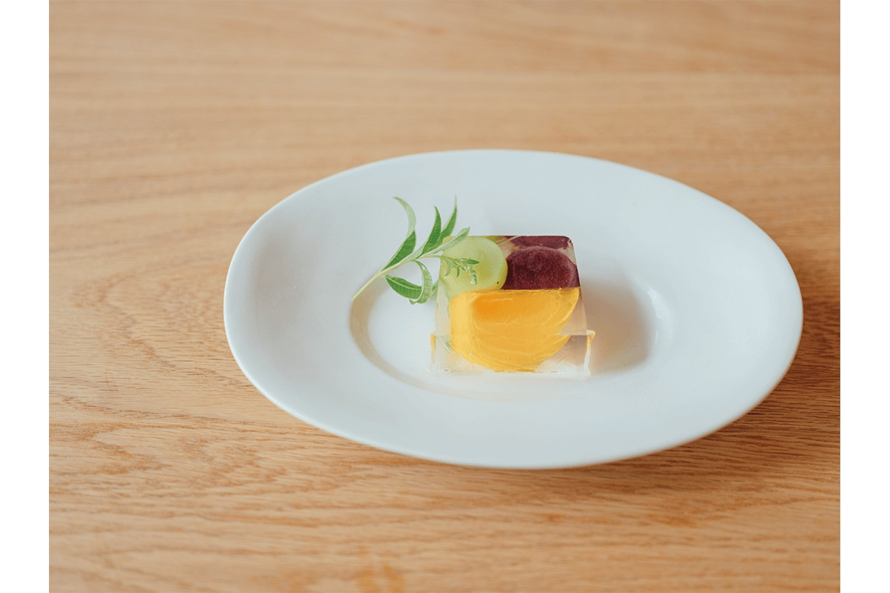
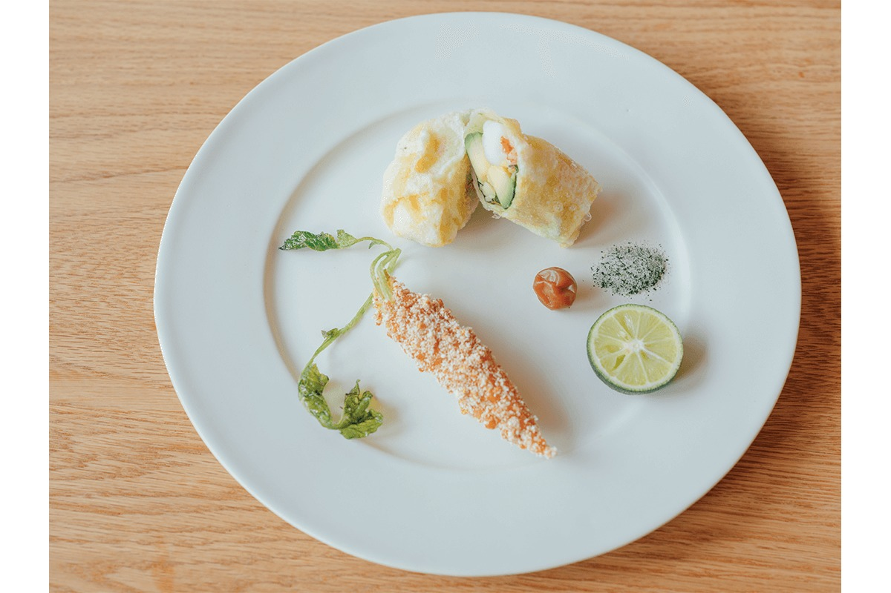
«Саэдзури» в «Сика-но фунэ»
- Адрес
- префектура Нара, город Нара, Иноуэ-тё, 11
- Телефон
- +81 742-94-9700
- Часы работы
- 11:00–17:00
- Выходные
- вторник, среда
Подарки из «Камадо»
Перед дорогой домой стоит заглянуть в «Камадо» за подарками. Здесь стоят продукты производителей со всей префектуры, например сливовое вино местной сакэварни и гречишный чай из лапшичной, а рядом ремесленные вещи.
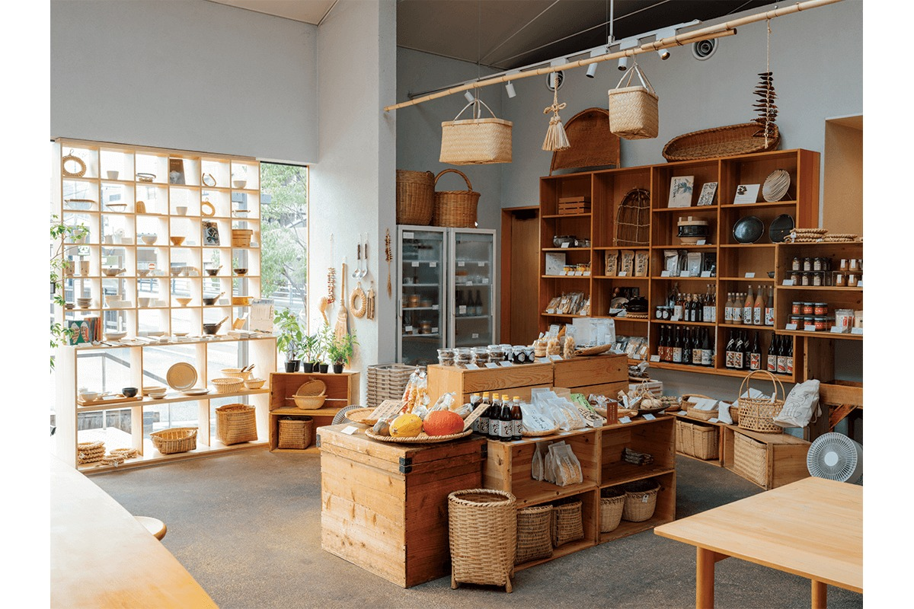
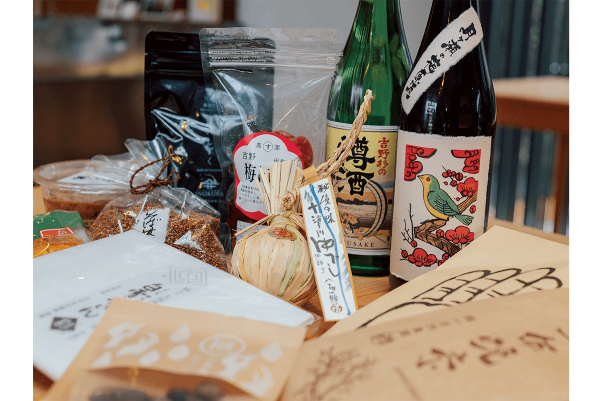
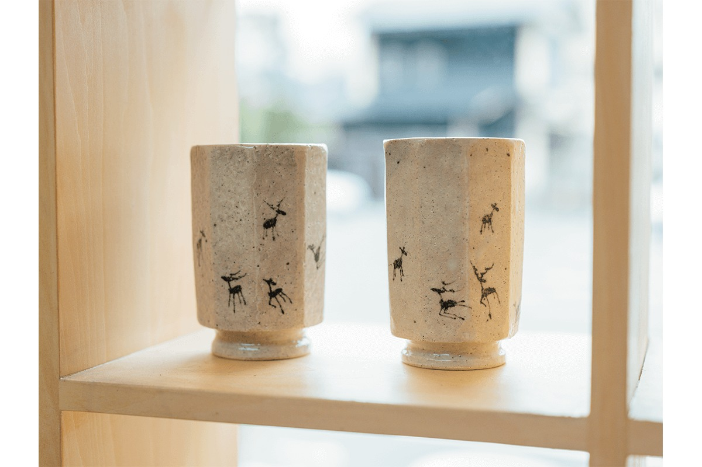
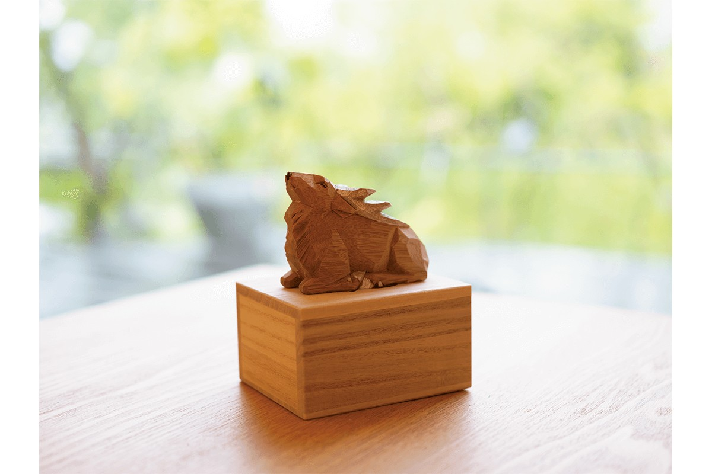
«Камадо» в «Сика-но фунэ»
- Адрес
- префектура Нара, город Нара, Иноуэ-тё, 11
- Телефон
- +81 742-94-5520
- Часы работы
- 11:00–16:00
- Выходные
- среда, вторник раз в две недели
Всё, что Юкико Исимура показывает гостям, объединяет одно: любовь к Наре. «Может быть, они не очень многословны, но через уют и вкус передают душу тем, кто сюда приезжает», говорит она. И добавляет, что в городе всё время появляются новые сокровища.
Фото: Кохэй Ямамото, Вакана Баба.